| Realizer-Related Features | ||
|---|---|---|
| Prev | Chapter 6. Displaying and Editing Graphs | Next |
The yFiles label capabilities cover a variety of standard features common with today's word processing systems. A label can have multiple lines, the label's text can be aligned in several ways, and font attributes like type, size, and color can be controlled.
Using an instance of type java.awt.Insets, a label's text can be placed with custom margins within its bounding box. Other graphical attributes, including background and border color, can be set, too.
When selected, labels provide a selection indication (see also the section called “Selection State”).
Look and feel of both node labels and edge labels are defined by so-called configurations. The default label configuration already provides support for icons, rotated labels, and HTML rendering, for example.
The placement of a label is done relative to its respective graph element. The actual position(s) a label can have around its element is determined by a so-called label model. The label model also governs how a label moves when its graph element is interacted with (i.e., when the size changes or the position), so that the placement relative to the element is maintained.
Figure 6.18. Examples of node labels using the default label configuration
|
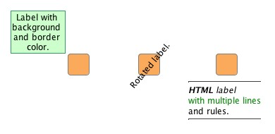
|
| Node labels using the default label configuration. Each label uses a discrete position relative to its node which is defined by a label model. |
When setting up labels, it is important that a label has proper context before it
is configured.
Essentially, this means that after creation the label first has to be bound to a
realizer (which itself needs to be bound to a graph element).
Binding a node label to a node realizer is done by the setLabel and addLabel
and addLabel method, respectively, of class NodeRealizer.
Binding an edge label to an edge realizer is done by the addLabel
method, respectively, of class NodeRealizer.
Binding an edge label to an edge realizer is done by the addLabel method of class EdgeRealizer.
method of class EdgeRealizer.
The following code shows how to create the labels depicted in Figure 6.18, “Examples of node labels using the default label configuration” above. More details on the setup of label models for node labels in particular are in the section called “Node Label Models” below.
Example 6.3. Creating some node labels
// 'nr1' to 'nr3' are of type y.view.NodeRealizer.
NodeLabel nl;
// First node.
nl = nr1.createNodeLabel();
nr1.setLabel(nl);
// Set the label model and use a position northwest.
SmartNodeLabelModel nlModel = new SmartNodeLabelModel();
nl.setLabelModel(nlModel,
nlModel.createDiscreteModelParameter(SmartNodeLabelModel.POSITION_NORTH_WEST));
// Note the line breaks.
nl.setText("Label with \nbackground \nand border \ncolor.");
nl.setBackgroundColor(new Color(204, 255, 204));
nl.setLineColor(new Color(51, 153, 102));
// Second node.
nl = nr2.createNodeLabel();
nr2.setLabel(nl);
nl.setText("Rotated label.");
nl.setRotationAngle(310);
// Third node.
nl = nr3.createNodeLabel();
nr3.setLabel(nl);
// Set the label model and use a position south.
nl.setLabelModel(nlModel,
nlModel.createDiscreteModelParameter(SmartNodeLabelModel.POSITION_SOUTH));
// HTML rendering is on by default.
nl.setText("<html><hr>" +
"<em><b>HTML</b> label</em><br>" +
"with multiple lines<br>" +
"and rules." +
"<hr></html>");
Look and feel of both node labels and edge labels are defined by so-called "configurations," i.e., sets of interface implementations that cover all aspects of label functionality.
Table 6.6. Predefined label configurations
| Configuration | Description |
|---|---|
| default |
Default label configuration encapsulated in class DefaultLabelConfiguration |
| Hyperlink support |
Enhances the HTML support of DefaultLabelConfiguration and supports hyperlink functionality.
Encapsulated in class HtmlLabelConfiguration |
| CroppingLabel | Provides automatic line-wrapping of a label's text. |
| AutoFlippingLabel | Automatically takes care of rotated edge labels that are upside-down and flips their presentation for better readability. Available only for edge labels. See also the section called “Auto-rotated Edge Labels”. |
The default label configuration needs no further setup and is set for any newly created label. It supports alignment settings and font attributes for the entire label text. Each time a new label text is set or one of the label's properties changes, the label's size is automatically updated with respect to the metrics of the font.
A label can be rotated, it can also show an icon both instead of, or in addition to its text, and for complete freedom in design it can even render HTML code. HTML rendering is enabled by default and is triggered when the label's text starts with <html>.
The rendering capabilities are constrained to the basic HTML support provided by Swing.
Figure 6.19, “Label with icon instead of text” is created by the code shown in Example 6.4, “Creating a label with an icon”.
Example 6.4. Creating a label with an icon
// 'nr' is of type y.view.NodeRealizer. NodeLabel nl = nr.createNodeLabel(); nr.setLabel(nl); // Set the label model and use a position north. SmartNodeLabelModel nlModel = new SmartNodeLabelModel(); nl.setLabelModel(nlModel, nlModel.createDiscreteModelParameter(SmartNodeLabelModel.POSITION_NORTH)); // Well-known icon that comes in handy as an example... nl.setIcon(MetalIconFactory.getFileChooserHomeFolderIcon());
Using an image icon as the content of a node label permits a node that is
rendered by a ShapeNodeRealizer to show
both shape and image.
In contrast to using an
ImageNodeRealizer
to show
both shape and image.
In contrast to using an
ImageNodeRealizer , however, the image
will retain its size, i.e., it will not scale with the node.
, however, the image
will retain its size, i.e., it will not scale with the node.
Using the additional line of code from Example 6.5, “Setting custom margins”, the label's bounding box is effectively enlarged to create the specified margins around the text. See Figure 6.20, “Label text with custom margins” for the result.
Example 6.5. Setting custom margins
// Increase the left margin. nl.setInsets(new Insets(10, 70, 10, 10));
Class HtmlLabelConfiguration provides enhanced
HTML support.
In particular, this includes support for handling mouse events on hyperlinks.
Similar to the default label configuration, HTML rendering is enabled when the label's
text starts with <html>.
provides enhanced
HTML support.
In particular, this includes support for handling mouse events on hyperlinks.
Similar to the default label configuration, HTML rendering is enabled when the label's
text starts with <html>.
Hyperlink support can be used to enable functionality in the view similar to a web browser. Clicking on a link in HTML label text can navigate to another part in the diagram, for example.
The following code shows how to set HtmlLabelConfiguration as the configuration for a node label:
Example 6.6. Using HtmlLabelConfiguration with a node label
// 'nl' is of type y.view.NodeLabel.
// Instantiate HtmlLabelConfiguration.
YLabel.Factory factory = NodeLabel.getFactory();
HtmlLabelConfiguration impl = new HtmlLabelConfiguration();
// In the default configuration replace interface implementations by the
// specialized variants from HtmlLabelConfiguration.
Map htmlHyperlinkConfig = factory.createDefaultConfigurationMap();
htmlHyperlinkConfig.put(YLabel.Painter.class, impl);
htmlHyperlinkConfig.put(YLabel.Layout.class, impl);
htmlHyperlinkConfig.put(YLabel.BoundsProvider.class, impl);
// Add this configuration to the factory.
factory.addConfiguration("HyperlinkSupport", htmlHyperlinkConfig);
// Set the configuration for a node label.
nl.setConfiguration("HyperlinkSupport");
Note that if the label's text does not start with <html>, then this configuration provides the same functionality as the default label configuration.
As a first step to properly handling hyperlinks in HTML label text, a customized EditMode implementation is required to recognize relevant user interaction. The implementation needs to filter mouse clicked events and mouse moved events that occurred on labels. Subsequently, each filtered event needs to be forwarded to the following method to test whether it qualifies to raise an appropriate javax.swing.event.HyperlinkEvent:
void handleLabelEvent(YLabel label, Mouse2DEvent event, HyperlinkListener callback) |
|
| Description |
Determines whether the given mouse event will raise an appropriate hyperlink event
for the label.
The hyperlink event is conveyed using a HtmlLabelConfiguration.LabelHyperlinkEvent |
The handleLabelEvent method expects a mouse event of type Mouse2DEvent which uses world coordinates.
This Mouse2DEvent can be synthesized using the original mouse event and the world
coordinates of it.
Depending on the particular HTMLEditorKit implementation that actually renders the
HTML, the synthesized mouse event needs to have an event type that differs from
that of the original mouse event.
which uses world coordinates.
This Mouse2DEvent can be synthesized using the original mouse event and the world
coordinates of it.
Depending on the particular HTMLEditorKit implementation that actually renders the
HTML, the synthesized mouse event needs to have an event type that differs from
that of the original mouse event.
A resulting HtmlLabelConfiguration.LabelHyperlinkEvent is given to the javax.swing.event.HyperlinkListener callback,
which is the basis for any further application-specific processing.
is given to the javax.swing.event.HyperlinkListener callback,
which is the basis for any further application-specific processing.
The necessary setup to handle hyperlinks in HTML label text can be observed best in tutorial demo application HyperlinkDemo.java.
Using the CroppingLabel configuration, which enables a label's text to be automatically line-wrapped, it is easily possible to have a label's visual presentation truncated to fit into the node's size, for example. Figure 6.21, “Label text line-wrapping and cropping” shows both the default behavior when a node label has a long text, and the results when the text is automatically line-wrapped to fit either the width or the width and height of its node. In the latter case, when the line-wrapped label text does not fit, the displayed text is truncated and an ellipsis character replaces the part that is not shown.
Figure 6.21. Label text line-wrapping and cropping
|
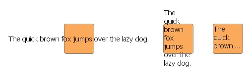
|
| The same label using the CroppingLabel configuration and different auto-sizing policies. |
Example 6.7, “Different sizing policies for the label text” shows the code that sets up the auto-sizing policies depicted in Figure 6.21, “Label text line-wrapping and cropping”.
The CroppingLabel configuration currently has no support for HTML rendering or setting an icon with a label.
Example 6.7. Different sizing policies for the label text
// 'graph' is of type y.view.Graph2D.
Set configurations = NodeLabel.getFactory().getAvailableConfigurations();
for (int i = 0; i < 3; i++) {
Node n = graph.createNode(200 * (i + 1), 100);
NodeLabel nl = graph.getRealizer(n).getLabel();
nl.setFontName("Tahoma");
nl.setFontSize(14);
nl.setAlignment(YLabel.ALIGN_LEFT);
nl.setText("The quick brown fox jumps over the lazy dog.");
switch (i) {
case 1:
if (configurations.contains("CroppingLabel")) {
nl.setConfiguration("CroppingLabel");
nl.setAutoSizePolicy(NodeLabel.AUTOSIZE_NODE_WIDTH);
}
break;
case 2:
if (configurations.contains("CroppingLabel")) {
nl.setConfiguration("CroppingLabel");
nl.setAutoSizePolicy(YLabel.AUTOSIZE_NONE);
nl.setContentSize(60, 60);
}
break;
default:
nl.setAutoSizePolicy(YLabel.AUTOSIZE_CONTENT);
}
}
Abstract class YLabel defines a set of inner interfaces which allow fine-grained control over all aspects of a label's visual representation and behavior. Custom label logic can be conveniently expressed by providing implementations for only a selection or for all of these interfaces:
Together, a set of actual implementations for these interfaces forms a so-called "configuration" that defines the look and feel of a label. Different configurations can be used to define a variety of label types.
Management of label configurations is done by static inner class
YLabel.Factory .
A reference to this class can be get using the NodeLabel and EdgeLabel class
method:
.
A reference to this class can be get using the NodeLabel and EdgeLabel class
method:
static YLabel.Factory getFactory() |
|
| Description | Static method in class NodeLabel to get the factory for configuration management. |
static YLabel.Factory getFactory() |
|
| Description | Static method in class EdgeLabel to get the factory for configuration management. |
To handle user-defined data, YLabel defines the
YLabel.UserDataHandler inner interface.
This interface is used to delegate all work that relates to copying or
(de)serializing of all user-defined data of a label.
Class SimpleUserDataHandler
inner interface.
This interface is used to delegate all work that relates to copying or
(de)serializing of all user-defined data of a label.
Class SimpleUserDataHandler can be used
as a default implementation for this interface.
It is capable of dealing with arbitrary user-defined data objects that
implement interfaces java.lang.Cloneable (for copying)
and java.io.Serializable (for serialization and
deserialization).
can be used
as a default implementation for this interface.
It is capable of dealing with arbitrary user-defined data objects that
implement interfaces java.lang.Cloneable (for copying)
and java.io.Serializable (for serialization and
deserialization).
Class DefaultLabelConfiguration serves as
a default implementation for all YLabel interfaces.
It provides the default label behavior and can be used as a convenient base for
customized configurations.
Example 6.8, “Customizing the default node label configuration” shows how to create a
specialized node label configuration using another YLabel.Painter
implementation.
serves as
a default implementation for all YLabel interfaces.
It provides the default label behavior and can be used as a convenient base for
customized configurations.
Example 6.8, “Customizing the default node label configuration” shows how to create a
specialized node label configuration using another YLabel.Painter
implementation.
Example 6.8. Customizing the default node label configuration
// Get the factory to register custom styles/configurations.
YLabel.Factory factory = NodeLabel.getFactory();
// Retrieve a map that holds the default NodeLabel configuration.
// The implementations contained therein can be replaced one by one in order to
// create custom configurations...
Map implementationsMap = factory.createDefaultConfigurationMap();
// Customize the painting with a custom YLabel.Painter implementation.
implementationsMap.put(YLabel.Painter.class, new MyPainter());
// Add this configuration to the factory.
factory.addConfiguration("Bubble", implementationsMap);
Tutorial demo application YLabelConfigurationDemo.java presents in detail how a custom node label configuration is created.
The aforementioned general features are offered by abstract class
YLabel .
Classes NodeLabel and EdgeLabel provide further label functionality that is
specific to the respective type of graph element.
Figure 6.22, “Label classes hierarchy” presents the class hierarchy for the label
functionality from package y.view.
.
Classes NodeLabel and EdgeLabel provide further label functionality that is
specific to the respective type of graph element.
Figure 6.22, “Label classes hierarchy” presents the class hierarchy for the label
functionality from package y.view.
A label naturally belongs to a specific graph element, and accordingly should be presented near this element. To control a label's position relative to its element, a so-called "label model" is used.
A label model determines the positions a label can have around its graph element. It governs the dynamic behavior of a label in an interactive scenario, when
and is also queried for automatic label placement.
A newly created node label uses the default label model that is defined by class
NodeLabel .
This label model allows discrete positions inside the node's bounds.
The default label position of this model is at the center of the node.
.
This label model allows discrete positions inside the node's bounds.
The default label position of this model is at the center of the node.
The default node label model constrains positioning of the label to nine predefined discrete positions.
Class SmartNodeLabelModel is the most versatile
label model for node labels.
It supports sophisticated "free" label positioning, i.e., it does not constrain
label positioning in any way but instead allows any position both within and outside
the node's bounds.
Label positions can be aligned with the borderlines of the node at any distance.
Additionally, SmartNodeLabelModel also provides support for discrete label positions.
is the most versatile
label model for node labels.
It supports sophisticated "free" label positioning, i.e., it does not constrain
label positioning in any way but instead allows any position both within and outside
the node's bounds.
Label positions can be aligned with the borderlines of the node at any distance.
Additionally, SmartNodeLabelModel also provides support for discrete label positions.
Figure 6.23. SmartNodeLabelModel
|
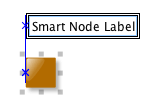
|
| No candidate boxes painted when moved: A node label that uses label model SmartNodeLabelModel can have any position. The blue snap line is a visual feedback to the user that the label is left-aligned with the node. |
Example 6.9, “Using SmartNodeLabelModel” shows how to use SmartNodeLabelModel
for a node label.
The label model and a label model parameter need to be set with the node label via
the setLabelModel method of class NodeLabel.
The model parameter determines the actual position for the node label.
The default model parameter can be retrieved by:
method of class NodeLabel.
The model parameter determines the actual position for the node label.
The default model parameter can be retrieved by:
Object getDefaultParameter() |
|
| Description | Returns the default model parameter for a model position. The node label is center-aligned with its node. |
Example 6.9. Using SmartNodeLabelModel
// 'nl' is of type y.view.NodeLabel. // Use SmartNodeLabelModel with the default model parameter for the node label. SmartNodeLabelModel nlModel = new SmartNodeLabelModel(); nl.setLabelModel(nlModel, nlModel.getDefaultParameter());
Figure 6.24. Discrete node label positions supported by SmartNodeLabelModel
|
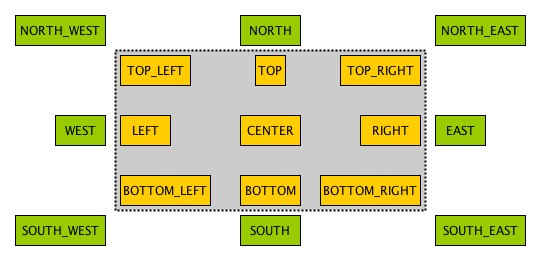
|
| 17 predefined discrete positions within and outside the node's bounds. The actual constants for each discrete position are prefixed with POSITION_. |
This method can be used to achieve any of the predefined discrete node label positions:
Object createDiscreteModelParameter(int position) |
|
| Description | Factory method in class SmartNodeLabelModel to get the model parameter for a predefined discrete node label position. |
The following code shows how to set SmartNodeLabelModel as the label model for a node label and how to choose one of the available discrete label positions:
Example 6.10. Using a discrete node label position
// 'nl' is of type y.view.NodeLabel. // Use SmartNodeLabelModel for the node label. SmartNodeLabelModel nlModel = new SmartNodeLabelModel(); // Choose one of the predefined discrete label positions, e.g., the lower right // corner outside the node bounds. nl.setLabelModel(nlModel, nlModel.createDiscreteModelParameter(SmartNodeLabelModel.POSITION_SOUTH_EAST));
The following method can be used to achieve a label position that is aligned to the borderlines of a label's node:
Object createAlignedModelParameter(OrientedRectangle labelBox, NodeLayout nodeLayout, int alignment) |
|
| Description | Factory method in class SmartNodeLabelModel to get the model parameter for an aligned node label position. |
In an interactive scenario, i.e., when a label is being moved, SmartNodeLabelModel allows a user to move the label to any position relative to the node, irrespective of a label's initial setup or position before the move gesture. Controller class MoveLabelMode, the view mode that handles the label move gesture, can optionally provide additional special support for interactive snapping of labels. This enables alignment of a label with other labels of its node, for example.
For a label's dynamic behavior when its node is being resized, its positions before the resize gesture is taken into account. For example, labels that are aligned, either with a borderline or the center of their node, will stay aligned.
The dynamic behavior of node labels that use SmartNodeLabelModel, in particular the snapping support provided by view mode MoveLabelMode, can be observed in tutorial demo application SmartLabelModelDemo.java.
A newly created edge label uses the default label model that is defined by class
EdgeLabel .
This label model allows discrete positions along the edge's path.
The default label position of this model is near the middle of the longest segment
of the edge, either below or to the right of it, depending on the slope of the segment.
.
This label model allows discrete positions along the edge's path.
The default label position of this model is near the middle of the longest segment
of the edge, either below or to the right of it, depending on the slope of the segment.
The default edge label model constrains positioning of the label to six predefined discrete positions.
Class SmartEdgeLabelModel is the most versatile
label model for edge labels.
It supports sophisticated "free" label positioning, i.e., it does not constrain
label positioning in any way but instead allows any position.
Additionally, SmartEdgeLabelModel also provides support for discrete label positions.
is the most versatile
label model for edge labels.
It supports sophisticated "free" label positioning, i.e., it does not constrain
label positioning in any way but instead allows any position.
Additionally, SmartEdgeLabelModel also provides support for discrete label positions.
Figure 6.25. SmartEdgeLabelModel
|
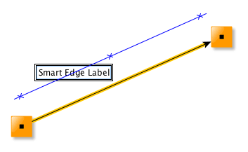
|
| No candidate boxes painted when moved: An edge label that uses label model SmartEdgeLabelModel can have any position. The blue snap line is a visual feedback to the user that indicates the same distance between label and edge path as before the move gesture started. |
Example 6.11, “Using SmartEdgeLabelModel” shows how to use SmartEdgeLabelModel
for an edge label.
The label model and a label model parameter need to be set with the edge label via
the setLabelModel method of class EdgeLabel.
The model parameter determines the actual position for the edge label.
The default model parameter can be retrieved by:
method of class EdgeLabel.
The model parameter determines the actual position for the edge label.
The default model parameter can be retrieved by:
Object getDefaultParameter() |
|
| Description | Returns the default model parameter for a model position. The edge label is near the source node, on the edge path. |
Example 6.11. Using SmartEdgeLabelModel
// 'el' is of type y.view.EdgeLabel. // Use SmartEdgeLabelModel with the default model parameter for the edge label. SmartEdgeLabelModel elModel = new SmartEdgeLabelModel(); el.setLabelModel(elModel, elModel.getDefaultParameter());
Figure 6.26. Discrete edge label positions supported by SmartEdgeLabelModel
|
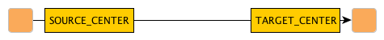
|
|
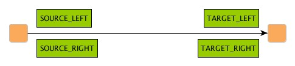
|
| 6 predefined discrete positions near the source and target nodes of the edge. The actual constants for each discrete position are prefixed with POSITION_. |
This method can be used to achieve any of the predefined discrete edge label positions:
Object createDiscreteModelParameter(int position) |
|
| Description | Factory method in class SmartEdgeLabelModel to get the model parameter for a predefined discrete edge label position. |
The following code shows how to set SmartEdgeLabelModel as the label model for a edge label and how to choose one of the available discrete label positions:
Example 6.12. Using a discrete edge label position
// 'el' is of type y.view.EdgeLabel. // Use SmartEdgeLabelModel for the edge label. SmartEdgeLabelModel elModel = new SmartEdgeLabelModel(); // Choose one of the predefined discrete label positions, e.g., near the source // node, left of the edge path. el.setLabelModel(elModel, elModel.createDiscreteModelParameter(SmartEdgeLabelModel.POSITION_SOURCE_LEFT));
In an interactive scenario, i.e., when a label is being moved, SmartEdgeLabelModel allows a user to move the label to any position relative to the edge, irrespective of a label's initial setup or position before the move gesture. Controller class MoveLabelMode, the view mode that handles the label move gesture, can optionally provide additional special support for interactive snapping of labels. This enables a user to maintain the same distance to the edge path while moving, for example.
Optionally, SmartEdgeLabelModel can be configured so that edge labels auto-rotate according to the angle of the corresponding reference edge segment:
void setAutoRotationEnabled(boolean enabled) |
|
| Description | Controls auto-rotation of edge labels. |
See also the section called “Auto-rotated Edge Labels”.
The dynamic behavior of edge labels that use SmartEdgeLabelModel, in particular the snapping support provided by view mode MoveLabelMode, can be observed in tutorial demo application SmartLabelModelDemo.java.
Edge labels also support being rotated, and using an appropriate edge label model it is possible to have the text of an edge label be in parallel to its corresponding edge segment, even in a dynamic scenario where the slope of the edge segment changes.
Figure 6.27. Auto-rotating edge label
|
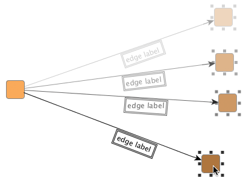
|
| The edge label automatically adjusts to the slope of its edge segment as the node is being moved. |
The following code shows the setup of an edge label so that it will auto-rotate with its edge (segment).
Example 6.13. Setup of auto-rotating edge label
// 'er' is of type y.view.EdgeRealizer. // Create the label and add it to the edge realizer. // By default, the edge label uses a DiscreteEdgeLabelModel with candidate mask // SIX_POS and position TAIL. EdgeLabel el = er.createEdgeLabel(); er.addLabel(el); // Get the edge label's current oriented bounds in absolute world coordinates. OrientedRectangle currentBounds = el.getOrientedBox(); // Set up the label model for the edge label. SmartEdgeLabelModel supports // "free" label positioning and auto-rotation of edge labels. SmartEdgeLabelModel elModel = new SmartEdgeLabelModel(); elModel.setAutoRotationEnabled(true); // Use the default model parameter initially when setting the label model. el.setLabelModel(elModel, elModel.getDefaultParameter()); // Now, get the model parameter that best encodes the edge label's current // bounds with respect to the edge label's current label model. Object param = el.getBestModelParameterForBounds(currentBounds); el.setModelParameter(param);
Labels have oriented bounds that are defined by class OrientedRectangle .
Note that an OrientedRectangle has its origin and rotation center at the lower left
corner and is rotated counterclockwise.
.
Note that an OrientedRectangle has its origin and rotation center at the lower left
corner and is rotated counterclockwise.
The edge label models listed in the following table provide support for rotated labels:
Table 6.7. Edge label models that support rotated labels
| Model Type | Description |
|---|---|
| SmartEdgeLabelModel |
Supports sophisticated "free" label positioning where label positioning is not constrained in any way but instead any position is allowed. |
| RotatedDiscreteEdgeLabelModel |
Defines a maximum of six positions along the edge's path, and also a maximum of three positions directly on the edge. |
| RotatedSliderEdgeLabelModel |
Supports nearly continuous label positions along the edge's path as well as directly on it. |
To ensure that users can easily understand the textual information in rotated labels, the "AutoFlippingLabel" label configuration can be used. This configuration automatically flips the presentation of a label when it is upside-down. The following figure illustrates the benefit of automatic label flipping:
Figure 6.28. Auto-flip support with rotated edge labels
|
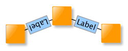
|
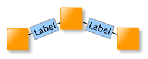
|
| Original auto-rotated edge labels with auto-flipping disabled. The left edge label is upside-down. | The same with auto-flipping enabled. Both edge labels can be easily read. |
The AutoFlippingLabel label configuration can be set using the following line of code:
For automatic placement of (rotated) edge labels
whose position is determined by the "free" label positioning support of a label
model, class PreferredPlacementDescriptor provides means to configure preferred placement options and preferred rotation behavior.
A label placement algorithm will adhere to the specified settings as good as possible
when calculating the edge label's placement.
provides means to configure preferred placement options and preferred rotation behavior.
A label placement algorithm will adhere to the specified settings as good as possible
when calculating the edge label's placement.
Preferred placement options for edge labels and setup thereof are described in the section called “Preferred Placement of Edge Labels”.
To enable proper Undo/Redo support for changes to an edge label's preferred placement options, it is mandatory that the label has an individual PreferredPlacementDescriptor instance as shown in this code snippet. (Code works analogously for actual EdgeLabelLayout implementations.)
Node ports are a means to visually define areas at a node where edges are allowed to connect. They contribute both to a node's visual representation as well as to its interactive behavior.
Figure 6.29. Node ports
|
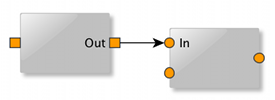
|
| Visual representations of node ports using filled squares and circles, respectively. The node ports are located at the border of their nodes. |
A node can have an arbitrary number of node ports associated. The visual appearance of a node port can be easily customized and labels can be attached to it. Node ports can also be associated with custom data.
Much like with a label, the position of a node port is determined indirectly according to a so-called PortLocationModel.
Node ports are fully supported in interactive scenarios: they can be connected to by edges, and be moved along the border of their node. When a node port is moved, all its connected edges (more precisely, the respective edge ends thereof) and its attached labels are moved accordingly. Also, node ports can be selected (see the section called “Selection State” for the default selection indication).
The yFiles library knows another, related meaning of the term "port" in the context of layout (calculation) that denotes the location of an edge end. Ultimately, the concept of node ports presented here is closely related to this edge-centric term. A node port can be seen as a view-only, node-centric counterpart, since it defines where edge ends can connect at a node.
Class NodePort defines a node port and provides
methods to work with a node port:
defines a node port and provides
methods to work with a node port:
A node port can be associated with a node by adding the corresponding NodePort object to the NodeRealizer of a node. Class NodeRealizer also provides methods to remove a node port from a node:
Example 6.15. Adding and removing a node port to/from a node
// 'nr' is of type y.view.NodeRealizer. NodePort port = new NodePort(); // Adding a node port. nr.addPort(port); // Removing a node port. nr.removePort(port);
Note that the removePort methods of NodeRealizer remove only the node port.
Any edges that connect to the node port or any labels attached to the node port
are not removed.
The static remove
methods of NodeRealizer remove only the node port.
Any edges that connect to the node port or any labels attached to the node port
are not removed.
The static remove method of class NodePort can be conveniently used to also remove all edges connected
and all labels attached to the node port.
method of class NodePort can be conveniently used to also remove all edges connected
and all labels attached to the node port.
Edges that shall connect to a node port need to be explicitly "bound" to the node port. The binding ensures a consistent logical model, which in turn serves as the basis for proper interaction with a diagram. When bound, edges (more precisely, their respective ends) will move along with their node port when it changes location.
Edges can be bound and un-bound to/from a node port as shown in the following code snippet:
Example 6.16. Binding and un-binding an edge to/from a node port
// 'er' is of type y.view.EdgeRealizer. // Adding a new node port to each end node of the edge (so that there is at // least one node port at both ends). er.getSourceRealizer().addPort(new NodePort()); er.getTargetRealizer().addPort(new NodePort()); // Binding the edge ends to the first node port of its end nodes. er.getSourceRealizer().getPort(0).bindSourcePort(er); er.getTargetRealizer().getPort(0).bindTargetPort(er); // Un-binding the edge ends from their node ports. NodePort.bindSourcePort(null, er); NodePort.bindTargetPort(null, er);
Note that binding an edge realizer to a node port establishes only a loose, non-structural coupling of edge (end) and node port. In particular, this means that when a node port gets removed from its node (via one of the removePort methods from class NodeRealizer), the edges connected to it are not removed.
Class NodePort defines a set of inner interfaces which allow fine-grained control over all aspects of a node port's visual representation and behavior. Custom node port logic can be conveniently expressed by providing implementations for only a selection or for all of these interfaces:
Together, a set of actual implementations for these interfaces forms a "configuration" that defines the look and feel of one node port type. Different configurations can be used to define a variety of node port types.
Node port configurations can be created similar to the pattern used in conjunction with class GenericNodeRealizer and GenericEdgeRealizer, respectively, as presented in the section called “Providing Interface Implementations”.
Management of node port configurations is done by static inner class NodePort.Factory .
A reference to this class can be get using the following NodePort class method:
.
A reference to this class can be get using the following NodePort class method:
static NodePort.Factory getFactory() |
|
| Description | Static method to get the factory for configuration management. |
Class ShapePortConfiguration serves as a default
implementation for all NodePort inner interfaces.
It provides the fallback node port behavior and can be used as a convenient base
for customized configurations.
The following code shows how to create a custom node port configuration where the
NodePort.Painter implementation is replaced:
serves as a default
implementation for all NodePort inner interfaces.
It provides the fallback node port behavior and can be used as a convenient base
for customized configurations.
The following code shows how to create a custom node port configuration where the
NodePort.Painter implementation is replaced:
Example 6.17. Customizing the default node port configuration
// Get the factory to register custom styles/configurations.
NodePort.Factory factory = NodePort.getFactory();
// Retrieve a map that holds the default NodePort configuration.
// The implementations contained therein can be replaced one by one in order to
// create custom configurations...
Map implementationsMap = factory.createDefaultConfigurationMap();
// Customize the painting with a custom NodePort.Painter implementation.
implementationsMap.put(NodePort.Painter.class, new MyPortPainter());
// Add this configuration to the factory.
factory.addConfiguration("MyPort", implementationsMap);
Using the new node port configuration to define the look and feel of a node port is done like so:
Example 6.18. Using a node port configuration
// Create a node port.
NodePort port = new NodePort();
// Set the configuration for this node port.
port.setConfiguration("MyPort");
// Add the node port to some node realizer.
myNodeRealizer.addPort(port);
Tutorial demo applications NodePortsDemo.java and LogicGatesDemo.java present creation of custom node port configurations. Note that the additional labels in the left figure are attached to node ports.
Figure 6.31. Sample port renderings
|
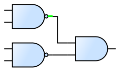
|
|
| Node port configurations from NodePortsDemo... | ... and from LogicGatesDemo. Part of each node port is a short line segment where edges can connect. The highlighted node port (green) shows the line segment nicely. |
Table 6.8, “Predefined NodePort.Painter implementations” lists predefined implementations for interface NodePort.Painter.
Table 6.8. Predefined NodePort.Painter implementations
| Classname | Description |
|---|---|
| SelectionPortPainter |
A decorator to draw a special selection indication. |
The PortConfigurations class of tutorial demo application NodePortsDemo.java uses SelectionPortPainter.
To handle user-defined data, NodePort defines the NodePort.UserDataHandler inner interface.
This interface is used to delegate all work that relates to copying of user-defined
data of a node port.
Class SimpleUserDataHandler
inner interface.
This interface is used to delegate all work that relates to copying of user-defined
data of a node port.
Class SimpleUserDataHandler can be used as
a default implementation for this interface.
It is capable of dealing with arbitrary user-defined data objects that implement
interface java.lang.Cloneable.
can be used as
a default implementation for this interface.
It is capable of dealing with arbitrary user-defined data objects that implement
interface java.lang.Cloneable.
Class PortConfigurationAdapter facilitates
creation of custom node port configurations.
It provides convenient adapter services that enable reusing existing GenericNodeRealizer
configurations as node port configurations.
facilitates
creation of custom node port configurations.
It provides convenient adapter services that enable reusing existing GenericNodeRealizer
configurations as node port configurations.
A port location model determines the location of a node port in both static as well as dynamic scenarios. It is responsible for finding the proper location for a node port with respect to a port location model parameter. The port location model parameter is associated with a node port and encodes its desired position. It is created by a port location model and is valid only in the context of this port location model.
In a dynamic scenario, where a user resizes or moves a node, or moves a node port, port location models are queried to determine the proper location of the node port(s).
Although a port location model determines the position of a node port, it cannot
be associated with one.
Instead, a port location model parameter
that is created by a PortLocationModel instance is associated with a given node
port.
Then, to determine the node port's location, this PortLocationModel instance is
found via the model parameter's getModel() method.
method.
Interface PortLocationModel provides the basis
for port location model implementations.
Table 6.9, “Predefined port location model implementations” lists the predefined port location
model implementations.
provides the basis
for port location model implementations.
Table 6.9, “Predefined port location model implementations” lists the predefined port location
model implementations.
Table 6.9. Predefined port location model implementations
| Model Type | Description |
|---|---|
| NodeScaledPortLocationModel |
The location of a node port is specified relative to the center of the node and in relation to its geometry. See the description below. |
Class NodeScaledPortLocationModel defines a port location model where the location of a node port is specified relative to the center of the node and in relation to the geometry of the node's bounding rectangle.
The center of the node is interpreted as the origin of a "coordinate system" where going up/to the left means negative sign and going down/to the right means positive sign. The distances to the borders of the node are interpreted relative to the node's width and height, respectively, so that the distance to the left (right) border, for example, is always half the width. Thus, the top left corner of the node corresponds to the relative location (-0.5, -0.5), the bottom right corner to (0.5, 0.5).
When the width or height of a node changes, the location of a node port is appropriately updated according to the node's new geometry. In effect, this means that the distances to the center of the node are scaled using the same factor that the width/height have changed.
NodeScaledPortLocationModel provides convenient support for different port location policies. These allow to position a node port along the rectangular border of a node, at predefined discrete locations, or "freely," i.e., without any restrictions. Example 6.19, “Creating a model parameter for a custom node port location” shows how a model parameter for a custom node port location can be created. It uses a relative offset that defines the node port to be anchored at a discrete location right of the node's center, half way to the node's border.
Example 6.19. Creating a model parameter for a custom node port location
NodeScaledPortLocationModel nsplm = new NodeScaledPortLocationModel();
PortLocationModelParameter plmp =
nsplm.createScaledParameter(new YPoint(0.25, 0.0));
// Set the model parameter with some node port.
someNodePort.setModelParameter(plmp);
When the node is resized, this custom node port location will be scaled accordingly so that the node port is always located right of the node's center, half way to the node's border.
A port location model parameter is an implementation of interface PortLocationModelParameter that is created by a port location model.
It encodes a possible node port position that is valid in the context of its corresponding
port location model.
that is created by a port location model.
It encodes a possible node port position that is valid in the context of its corresponding
port location model.
To create a model parameter, PortLocationModel defines the following method which can be used to obtain a model parameter that best matches a given (world coordinates) location.
PortLocationModelParameter createParameter(NodeRealizer owner, YPoint location) |
|
| Description | Default port location model parameter creation method. |
The port location model parameter of a node port can be specified using the following
method.
By default, NodePort instances use the NODE_CENTER_ANCHORED model parameter.
model parameter.
void setModelParameter(PortLocationModelParameter parameter) |
|
| Description | Sets the port location model parameter for a node port. |
Labeling a node port, i.e., adding some descriptive text that is shown close to
the node port in a diagram, is done using node labels from its node.
The node labels are set up using class PortLabelModel ,
a node label model specifically crafted to provide label support for node ports.
,
a node label model specifically crafted to provide label support for node ports.
Example 6.20. Creating a node label and attaching it to a node port
// 'nr' is of type y.view.NodeRealizer.
// 'port' is of type y.view.NodePort.
NodeLabel nl = nr.createNodeLabel();
nl.setText("Out");
// Using an offset of 3.0 [world coordinate units] between node port and the
// node label.
nl.setLabelModel(new PortLabelModel(3.0),
PortLabelModel.createParameter(port, PortLabelModel.NORTH));
nr.addLabel(nl);
Node labels that are set up using a model parameter created with the static createParameter method of PortLabelModel take a position relative to a given node port.
They will move accordingly when their node port does (either because the node port
is moved itself, or the node is resized and the node port moves as a consequence).
The model parameter encodes both position of the label as well as its association
with the specific node port.
method of PortLabelModel take a position relative to a given node port.
They will move accordingly when their node port does (either because the node port
is moved itself, or the node is resized and the node port moves as a consequence).
The model parameter encodes both position of the label as well as its association
with the specific node port.
It is important to understand that PortLabelModel provides only a loose coupling of node labels to a node port. In particular, this means that when a node port gets removed from its node (via one of the removePort methods from class NodeRealizer), the node labels associated with it are not removed. The following code can be used to remove only these node labels:
Example 6.21. Finding and removing all node labels associated with a node port
// 'port' is of type y.view.NodePort.
NodeRealizer nr = port.getRealizer();
// Find and remove all node labels that are associated with the given node port.
for (Iterator it = PortLabelModel.findLabels(port).iterator(); it.hasNext(); ) {
nr.removeLabel((NodeLabel)it.next());
}
The static remove method of class NodePort can be conveniently used to remove all edges connected
and all labels attached to a node port.
method of class NodePort can be conveniently used to remove all edges connected
and all labels attached to a node port.
Automatic layout for a diagram that contains nodes with node ports associated can
be conveniently invoked using class Graph2DLayoutExecutor,
which performs all necessary setup.
Internally, it uses the NodePortLayoutConfigurator class.
class.
After a layout has been calculated, NodePortLayoutConfigurator adjusts the positions of node ports to the calculated location of their respective edge ends. Additionally, it can be configured to create strong port constraints prior to the layout invocation for all edge ends that connect to node ports.
Naturally, automatic layout of diagrams containing node ports makes the most sense when invoking layout algorithms that obey port constraints. The layout algorithms that provide support for port constraints are listed in the section called “Port Constraints”. (This section also shows setup of port constraints.)
Tutorial demo applications NodePortsDemo.java and LogicGatesDemo.java both use Graph2DLayoutExecutor.
In addition to the EdgeRealizer object associated there are further classes involved in rendering an edge's visual representation. For each of the edge's bends the EdgeRealizer object holds a corresponding object of type Bend. The special graphical decoration that can be placed at either end of an edge is governed by class Arrow. And the line graphic of the edge itself can be controlled using class LineType.
The following methods provided by class EdgeRealizer can be used to handle arrows:
Arrow getArrow() |
|
| Description | Arrow-related methods from class EdgeRealizer. |
Class Arrow renders the graphical
decorations that can be placed at an edge's ends.
Normally, this decoration is some kind of arrowhead that is used to indicate
the edge's direction.
Table 6.10, “Arrow shapes of class Arrow” depicts the predefined arrow shapes.
renders the graphical
decorations that can be placed at an edge's ends.
Normally, this decoration is some kind of arrowhead that is used to indicate
the edge's direction.
Table 6.10, “Arrow shapes of class Arrow” depicts the predefined arrow shapes.
Note that omitting the decoration is done using another arrow shape. Arrow type NONE, which is not shown below, "renders" an empty arrow shape.
Table 6.10. Arrow shapes of class Arrow
| Arrow Type | Arrow Shape |
|---|---|
| CONCAVE |
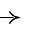
|
| CONVEX |
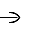
|
| CIRCLE |
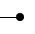
|
| DASH |
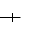
|
| DELTA |
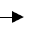
|
| DIAMOND |
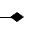
|
| PLAIN |
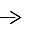
|
| SHORT |
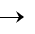
|
| STANDARD |
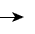
|
| SKEWED_DASH |
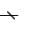
|
| T_SHAPE |
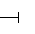
|
| TRANSPARENT_CIRCLE |
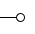
|
| WHITE_DELTA |
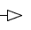
|
| WHITE_DIAMOND |
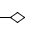
|
Class Arrow supports fine-grained control of arrowhead rendering. It is possible to specify an arrowhead's distance to the border of a node, and also the position of the edge path's end relative to an arrowhead's tip.
In addition to the predefined arrow shapes it is also possible to register
custom ones using the methods listed below.
The most freedom defining a customized arrow(head) is provided when using
graphical objects that implement interface
Drawable .
.
static Arrow addCustomArrow(String name, Drawable drawable) |
|
| Description | Getter and setter methods for custom arrow shapes. |
static Arrow addCustomArrow(String name, Drawable drawable, double arrowLength, double clipLength) |
|
| Description | Arrow shapes using customized distance and arrow length. |
Class Bend is to bends (also known as
control points) what classes NodeRealizer and EdgeRealizer are to nodes and
edges.
It handles all user interface (UI)-related aspects, i.e., it renders a bend's
graphical representation, and also provides a number of features including,
e.g., control of the selection state and support for hit tests.
is to bends (also known as
control points) what classes NodeRealizer and EdgeRealizer are to nodes and
edges.
It handles all user interface (UI)-related aspects, i.e., it renders a bend's
graphical representation, and also provides a number of features including,
e.g., control of the selection state and support for hit tests.
Note that bends, i.e., control points, determine the path of an edge, but are not necessarily part of the path itself. Especially the classes BezierEdgeRealizer and SplineEdgeRealizer exhibit this difference.
The most defining characteristic of a bend is its location. The following methods can be used to control it:
double getX() |
|
| Description | Getter and setter methods from class Bend. |
Class LineType is responsible for
rendering the line graphic of an edge.
It is used for both poly-line edges as well as curves.
Table 6.11, “Line types of class LineType” shows the predefined line types.
Note that the line types are available in different widths.
is responsible for
rendering the line graphic of an edge.
It is used for both poly-line edges as well as curves.
Table 6.11, “Line types of class LineType” shows the predefined line types.
Note that the line types are available in different widths.
Table 6.11. Line types of class LineType
| Constant Name | Line Type |
|---|---|
| DASHED_STYLE |
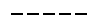
|
| DOTTED_STYLE |
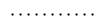
|
| DASHED_DOTTED_STYLE |
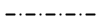
|
| LINE_STYLE |
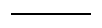
|
Different line types can be get directly using their respective names, e.g., DASHED_1, DOTTED_2, LINE_4, etc. Alternatively, LineType also offers the following static methods to get (one of) the available line types:
static Vector availableLineTypes() |
|
| Description | Static getter methods from class LineType. |
In addition to the predefined line types it is also possible to create custom ones using:
static LineType createLineType(float width, int cap, int join, float miterlimit, float[] dash, float dashPhase) |
|
| Description | Static getter methods from class LineType. |
The indication whether a graph element is selected or not contributes a great deal to the user experience and is of central importance to the notion of a user interacting with the graph structure by means of a graphical user interface.
The predefined NodeRealizer and EdgeRealizer implementations define special rendering logic for the selection indication of its associated graph elements. A selected node, e.g., also shows eight small knobs around its outline that can be used to change the node's width and height. Figure 6.34, “Selection indication for nodes, edges, bends, labels, and node ports” shows the default results for selected nodes, a selected edge, selected bends, selected labels, and selected node ports. Note that bends have different appearance depending on the context.
Figure 6.34. Selection indication for nodes, edges, bends, labels, and node ports
 |
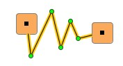
|
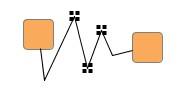
|
| Selected nodes. | Selected edge. | Selected control points (bends). |
|
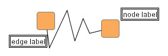
|
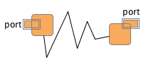
|
| Selected labels. | Selected node ports. |
Both realizer types offer getter and setter methods to control the selection
state of their associated graph element.
Likewise, similar methods in classes YLabel and Bend can be used to control the
selection state of node and edge labels and an edge's control points,
respectively.
Class Graph2D has a variety of additional convenience methods to change,
respectively query, the selection state of arbitrary collections of graph
elements.
Figure 6.35, “Methods for modifying the selection state” presents an overview of the classes and their
methods dealing with selection state.
Further, more sophisticated methods to alter the selection state are offered
by abstract class Selections .
.
Changes in the selection state of graph elements can easily be listened to
using the familiar events and listener concept.
Interface Graph2DSelectionListener conveys an event of type
Graph2DSelectionEvent
conveys an event of type
Graph2DSelectionEvent which can be
queried for specific details.
See the section called “Events and Listeners” for further description.
which can be
queried for specific details.
See the section called “Events and Listeners” for further description.
|
Copyright ©2004-2015, yWorks GmbH. All rights reserved. |